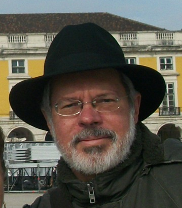

Murillo Florindo Cruz Filho
Nome em citações bibliográficas: Murillo Cruz
E-mail para contato: murillo8.cruz@gmail.com
- Economista (1974 – FEA/UFRJ) (atual Instituto de Economia da UFRJ);
- Mestrado (M.Sc.) (1976 – COPPE/UFRJ);
- Doutorado em Ciências (D.Sc.) (1995 - COPPE/UFRJ);
- Atividades de Pós-Doutorado (Pesquisa e Professor Visitante) - Universidade de Toronto - Canadá (2000; 2003);
- Aceitação de Doutorado, e Stipendium DAAD, Alemanha (1979) (Incompleto);
- Professor (1975) (concursado) (1977) do Instituto de Economia (IE-UFRJ);
- Professor do Instituto de Economia e do Instituto de Psicologia da UFRJ;
- Ex-técnico do CNPq e do MAST - Museu de Astronomia e Ciências Afins (Núcleo de História da Ciência) (1978-1980);
Propriedade Industrial: trabalhei durante 11 anos (1980-1990) na Assessoria da Presidência e na Coordenadoria Internacional do INPI. Participei de inúmeras Conferências Diplomáticas ou técnicas como representante do governo brasileiro; cursos, palestras e encontros sobre o tema, principalmente das transformações estruturais contemporâneas do direito de patentes à luz das novas tecnologias;
- Ex-consultor das Nações Unidas (PNUD - Nova Iorque) para auditoria e avaliação de projetos de treinamento em propriedade industrial em certos países árabes (Egito, Sudão, Marrocos, Jordânia, Síria e Iraque);
- Ex-consultor da Organização Mundial da Propriedade Intelectual (Genebra – WIPO - ONU) como membro representante dos países em desenvolvimento para avaliação de novos tratados internacionais sobre propriedade intelectual;
- Ex-consultor da UNCTAD (Genebra-ONU) sobre as transformações tecnológicas recentes e seus impactos para a transferência de tecnologia e para o desenvolvimento;
- Participei, em 1988, de um estágio e treinamento em propriedade industrial e informações tecnológicas contidas em documentos de patentes, no Japão, Suécia, França, Holanda e Alemanha, sob os auspícios da OMPI/ONU e do INPI;
- Atualmente, membro colaborador do IBPI - Instituto Brasileiro de Propriedade Intelectual;
- Possuo vários trabalhos sobre sistemas de patentes e tratados internacionais relativos à propriedade industrial, transferência de tecnologia, e informações tecnológicas contidas em documentos de patentes, além de artigos sobre História do Pensamento Econômico e Organização Industrial; e desde 1995 dedico-me, integralmente, à Pesquisa e ao Estudo das obras dos Economistas Institucionalistas Originais, principalmente da vida e obra de Thorstein Veblen;
Atleta Olímpico da Calçada da Fama do Clube de Regatas do Flamengo (2012);